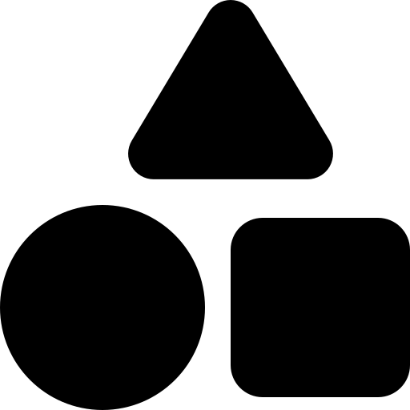

夜の日本市
von Tobias Dick und Anton Wittig Rendering competition entry of team Amaura
by Tobias Dick and Anton Wittig

{kind=link}
KonzeptConcept
Wir schreiben das Jahr 1850. Es ist beinahe Nacht. Heute wird der erste Blutmond stattfinden, seit du in diese Stadt gezogen bist, aber noch ist die Sonne nicht ganz untergegangen. Du kannst ein paar letzte Lichtstrahlen am Horizont erblicken. Du hast deine Arbeit auf dem Reisfeld später als alle anderen verlassen mit dem Hintergedanken du würdest eine Lohnerhöhung bekommen, wenn du weitere Überstunden machst. Aber der Anblick den du nun siehts, überrascht dich. Nicht nur, dass der Besitzer deines Lieblings-Ramenstandes nicht bereits auf dich wartet, es scheint die ganze Stadt leer zu sein. Du findest keine Menschenseele, so viel du auch suchst. Wo sind alle? Was sollst du jetzt tun? Du musst dich entscheiden, also wähle weise. The year is 1850. It's almost night. Today will be the first red moon since you moved to this town, but the sun has not fully set yet. You can see a few last drops of light on the horizon in the distance. You left from your work at the rice field later than anyone else, thinking you will get a raise if you keep working overtime. But what you're seeing now surprises you. Not only is the owner of your favorite ramen stall not waiting for you, it seems like the whole town is empty. You can't find a single soul. Where is everyone? What will you do now? It is your decision to make, so choose wisely.
Das Konzept unseres Bildes ist eine verlassene Straße eines alten japanischen Dorfes bei
Sonnenuntergang.
Als wir die Regeln der Rendering Competition gelesen haben, waren wir uns
schnell einig, dass wir eine Scene im Freien in einem asiatisch, östlichen Setting erstellen wollen.
Ursprünglich wurden wir von nächtlichen Straßen-Fotografien in modernen japanischen Städte
inspiriert, welche kleine, detailreiche Gebäude mit Neonbeleuchtung zeigen. Da wir jedoch kaum 3D
Modelle für dieses Setting auffindbar waren wandelten wir unsere Scene in ein weniger modernes
Setting ab, behielten unser Grundkonzept jedoch bei.
The concept of our image is the empty street of an old japanese village at dawn.
When reading the rules for the rendering competition, we very quickly agreed on creating an
outdoor scene in an eastern setting. Initially, we were inspired by nighttime photographs of side
streets in modern japanese cities, with
small, highly detailed buildings and neon lights. However, finding free 3D assets for our setting
proved to be very difficult, so we transformed our scene into a less modern setting, while still
keeping our core concept.

1920x1080

216.021

15

400

3h 13min

i5-11400F
12 Threads
Scene
Wir haben unsere Scene in Blender konstruiert indem wir hauptsächlich frei verfügbare 3D Modelle benutzt haben und diese für unsere Zwecke angepasst haben. Zusätzlich haben wir einige Modelle selbst erstellt wie zum Beispiel die Kisten, den Boden und das Gras. Wir haben die Scene im vorhinein geplant indem wir unsere groben Ideen mit Zeichnungen zu Papier gebracht und detailiert durchgesprochen haben. Wir wollten eine lange Straße mit Blick auf die Häuser auf einer Seite entwerfen. Zudem sollte auf der fokussierten Straßenseite eine kleine Gasse eingefügt werden. Den Fokus wollten wir spezial ein zentrales Objekt setzen, welches letztenendes der Ramenstand geworden ist. Wir platzierten des weiteren einen Tempel an das Ende der Straße und nutzten kleinere Objekte als Dekoration wo immer wir sie passend fanden. Wir benutzten dann frei verfügbare Texturen in der gesamten Scene, da die meisten Modelle die wir verwendet haben ohnehin ohne eigene Texturen zu finden waren. Die Materialien wurden erst in unserem eigenen Renderer zugewiesen, da die Materialformate des Wavefront OBJ Standards uns nicht genug Kontroller über die Materialeigenschaften gaben. Zuletzt fügten wir drei Punktlichtquellen, eine gerichtete Lichtquelle und mehrere Flächenlichtquellen hinzu um die gezielte Stimmung unserer Scene zu erreichen. Zusätzlich fügten wir der Scene eine Umgebungstextur hinzu um den Nachthimmel zu simulieren. We composed our scene in Blender by mainly using freely available 3D models and modifying them to our needs. Additionally, we added some own models such as the crates, the ground and the grass. We planned the scene construction beforehand by drawing and conceptualizing our rough ideas. We wanted to create a long road with a view of the houses at the sides. With a small alley on one side of the road. We also wanted to focus the viewer on one central piece in the scene, which became the ramen stall. We placed the temple at the end of the road and used smaller objects to decorate the scene wherever we saw fit. Then, we used freely available textures to texture the entire scene, as most of the models we used came without their own textures. The materials were assigned in our own renderer, since the material formats that are provided by the Wavefront OBJ standard did not give us enough control over the material properties. Finally, we added three point-lights, a directional light, and multiple area lights to set the mood of our scene, and added an environment map to simulate a night sky.Zusätzliche FunktionenAdditional Features
Um Höhenunterschiede auf Oberflächen zu fälschen ist eine der besten Methoden Normal Mapping. Indem man die Normalenvektoren an Ray Treffpunkten verzerrt kann eine hervorgehobene Oberfläche simuliert werden. Dies ist vor allem an unseren Wänden auffällig (siehe rechts) To fake height differences in a surface one of the best ways is using normal mapping. By perturbing the normals at ray hit points a displaced surface can be simulated. The use of this can especially be seen on the walls of the buildings (see the image on the right)
rt/materials/material(cooktorrance)
rt/solids/solid(triangle)
rt/integrators/recraytrace

Da die Kanten zwischen benachbarten Dreiecken, je nach Winkel zwischen diesen, scharf aussehen können und somit auf einzelne Polygone aufmerksam machen können, haben wir Smooth Triangles eingefügt. Durch diese wird der Normalenvektor einse Ray Treffers zwischen den Normalenvektoren der Ecken des Dreicks interpoliert. As the edge between neighboring triangles can be sharp depending on the angle between them and raise awareness to the single polygons, we introduce smooth triangles. For them the normal of a hit is the interpolation between the normal vectors assigned to the triangles points.
rt/solids/striangle
Normale Punktlichtquellen werfen üblicherweise sehr scharfkantige Schatten, die
nicht realistisch sind. Um höheren Realismus zu erreichen haben wir weiche Lichtquellen
implementiert, die weiche Schatten werfen.
Da Licht aus dem Himmel fast parallel auf die
Erde fällt kann es virtuell mit einer gerichteten Lichtquelle simuliert werden.
Normal point lights usually cast very sharp shadows, which is not realistic. To
achieve higher realism we implemented soft point lights which cast smooth shadows.
As
light coming from the sky is usually almost parallel it can be
simulated well by implementing a directional light.
rt/lights/pointlight
rt/lights/directional
Um unseren Code zu beschleunigen implementierten wir eine binnendifferenzierte
Objerflächenheuristik für die Erstellung unserer BVH
Zusätzlich aktivierten wir
multithreading mithilfe des openmp Pakets um unseren Raytracing zu parallelisieren.
To accelerate our code we implemented a binned Surface Area Heuristic for the
construction of our BVH.
Additionally we activated multithreading using the openmp package to parallelize the
raytracing.
rt/groups/bvh
rt/rendererWir entschieden uns dazu eine BRDF zu nutzen, die realistischer als die häufig genutzte Phong BRDF ist, weshalb wir die Cook-Torrance BRDF für unser Bild implementierten. Das erlaubte uns Roughness Maps zu verwenden, welche üblicherweise in den meisten Texturen enthalten sind. We decided to use a BRDF that is more realistic than the often used Phong BRDF, which is why we chose to implement the Cook-Torrance BRDF for our image. It also allowed us to use roughness maps, which are usually included with most textures.
rt/materials/cooktorrance